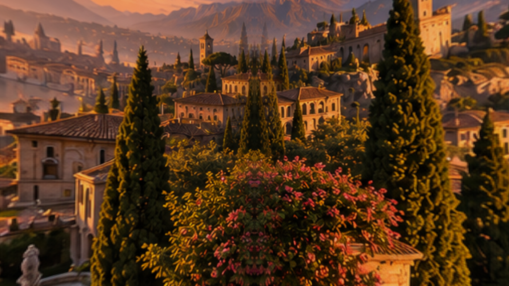
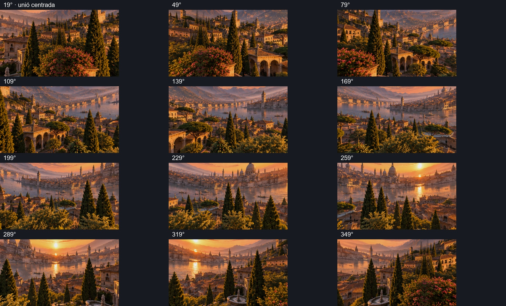
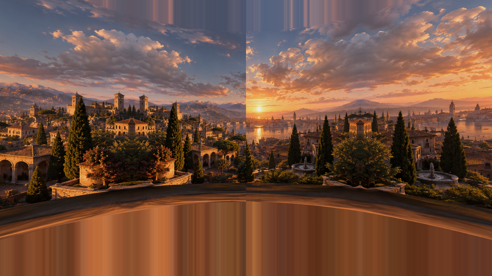

Panoràmica reparada i projecció d’una única volta de 360°, amb proporcions de 360×180°. Eliminada la repetició reflectida cada 100°. Un filtre estret als extrems manté la continuïtat de la unió.

Dotze captures natives de Unity separades 30°. Materials compartits per les tres variants i les cinc qualitats de Monteverdi. No s’han modificat la distribució dels objectes ni les dades de bake. La textura original queda conservada.

Captura centrada en l’antiga discontinuïtat. La direcció canvia perquè s’ha substituït la projecció repetida per una volta completa.
